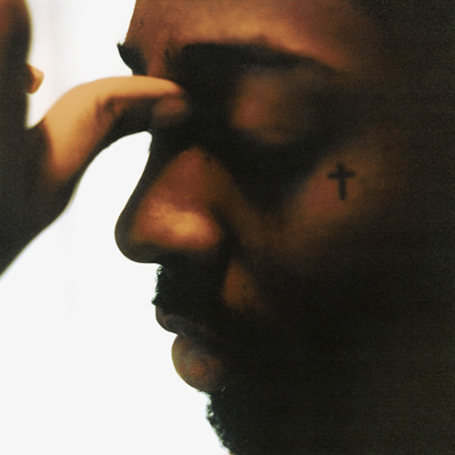

Icon : Brent Faiyaz impose sa vision du R&B moderne
Avec Icon, Brent Faiyaz poursuit la construction d’un univers artistique singulier, à la frontière entre R&B alternatif, trap soul et atmosphères minimalistes. L’artiste américain confirme ici son statut d’icône contemporaine en devenir, en proposant un projet introspectif, maîtrisé et profondément personnel.
Dans Icon, Brent Faiyaz explore les thèmes qui ont façonné son identité musicale : la célébrité, les relations instables, la solitude, le désir et les contradictions internes. Son écriture reste directe, parfois froide, souvent vulnérable. Il expose ses doutes et ses excès sans chercher à les embellir, ce qui donne au projet une authenticité marquante. L’album met en lumière un artiste conscient de son image publique, mais aussi des sacrifices qu’implique le succès. Cette dualité entre confiance et fragilité constitue le fil conducteur du projet.
Les productions de Icon reposent sur des instrumentales épurées, aux basses profondes et aux ambiances nocturnes. Brent Faiyaz laisse respirer les morceaux, utilisant les silences et les variations vocales pour créer une atmosphère immersive. Sa voix, reconnaissable entre mille, oscille entre douceur mélancolique et détachement assumé. Il joue avec les nuances, parfois presque chuchotées, parfois plus affirmées, ce qui renforce l’intimité du projet. Cette approche minimaliste permet de placer les émotions au centre de l’écoute, sans artifices inutiles.
Une affirmation d’indépendance artistique Avec Icon, Brent Faiyaz démontre qu’il n’a pas besoin de suivre les tendances dominantes pour exister. Il construit sa carrière à son rythme, avec une direction artistique cohérente et assumée. Le projet reflète une maturité croissante dans sa manière d’aborder les thèmes du pouvoir, de la notoriété et des relations humaines. Chaque morceau semble participer à la construction d’un personnage complexe : charismatique, lucide, mais profondément humain.

Un projet qui consolide son statut Icon confirme Brent Faiyaz comme l’une des figures majeures du R&B alternatif actuel. Son esthétique minimaliste, son honnêteté brute et son positionnement indépendant séduisent une génération en quête de sincérité. Plus qu’un simple album, Icon apparaît comme une déclaration d’identité : celle d’un artiste qui maîtrise son image, son son et son évolution.
Mention légale : Cet article a été rédigé par une intelligence artificielle (Le texte de l'article a été fait par l'IA).